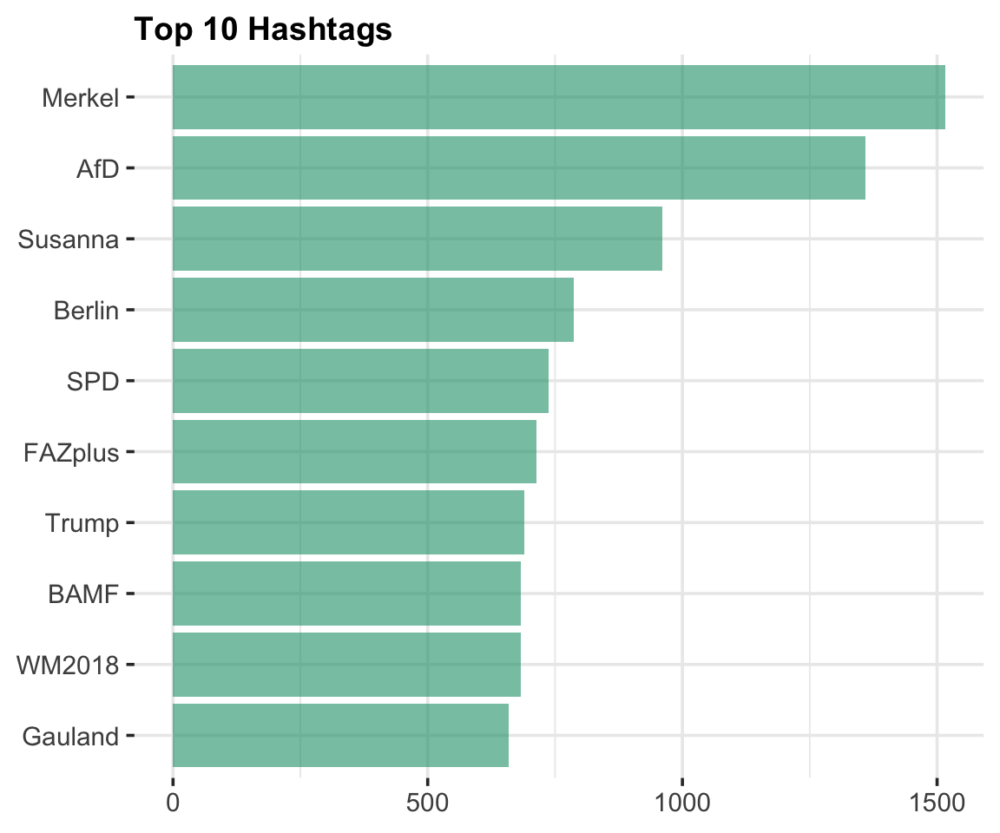

Welche Nachrichten-Inhalte werden aktuell bei Twitter diskutiert? Um das herauszufinden, haben wir die aktuellsten deutschsprachigen Tweets gesammelt, die einen Link zu einer Nachrichtenseite beinhalten. Die Tweets wurden mit Hilfe des R Packetes rtweet über die REST API ausgelesen. Der gesamte Code ist hier einzusehen.
load("../../../data/2018-06-11.Rda")rt$hashtags %>%
unlist() %>%
na.omit() %>%
table() %>%
sort(decreasing = TRUE) %>%
tibble::as_tibble() -> hash_table
colnames(hash_table) <- c("hashtag", "count")
hash_table %>%
top_n(10, count) %>%
ggplot( aes(reorder(hashtag,count), count)) +
geom_col(fill = Mycol[1], alpha = 0.6) +
coord_flip() +
labs(
x = NULL,
y = NULL,
title = "Top 10 Hashtags"
) 